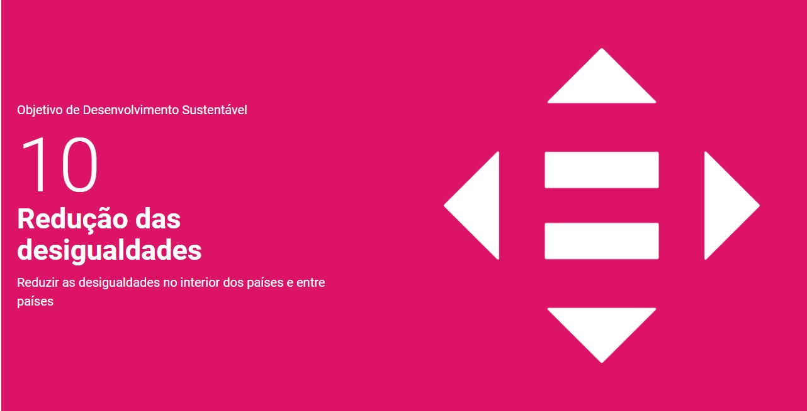
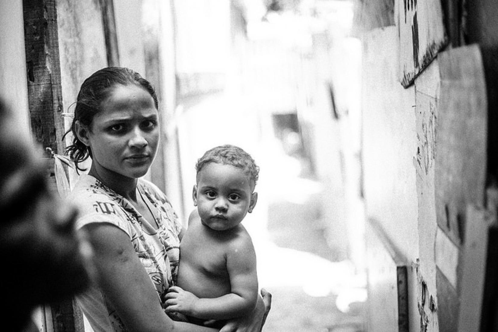
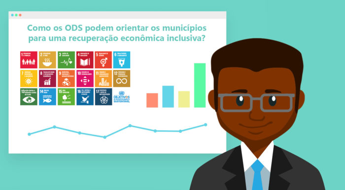

-

Objetivo 10. Reduzir a desigualdade dentro dos países e entre eles
O Objetivo 10 da Agenda 2030 da ONU visa reduzir desigualdades dentro e entre países. Para isso, é crucial garantir acesso equitativo a serviços básicos, educação de qualidade e empregos dignos.
-
Racismo ainda marca vida de brasileiros
O racismo ainda deixa profundas marcas na vida dos brasileiros, afetando oportunidades e gerando desigualdades, principalmente para a população negra. Superar essa discriminação exige esforços contínuos para promover equidade e justiça na sociedade brasileira.
-

Erradicação da Pobreza
Reduzir as desigualdades econômicas, sociais e políticas dentro dos países, promovendo a inclusão e a igualdade para todas as pessoas, independentemente de sua origem, gênero, orientação sexual, deficiência, religião ou etnia.
-

Como os ODS podem orientar ?
A desigualdade é uma questão historicamente acumulada no Brasil. Há muitas décadas o país ocupa as piores posições nos diversos rankings que se propõem a mensurar essa situação.